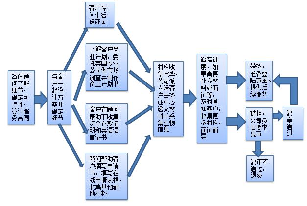

企业家移民签证类别介绍
企业家类是通过设立或接管一个或多个生意，并参与企业运营，从而在英国进行商业投资活动。自2008年6月30日起，英国按照新修订的企业家移民政策， 对申请人进行评分，给达到95 分的合格人士发放移民英国的通行证。
企业家移民流程
企业家移民签证服务流程

企业家移民签证初次申请要求
初次申请企业家移民签证必须获得分数：
75 分属性分
10 分英语能力
10 分生活保证资金
总分需要达到95分可进行申请。特别注意：英国的积分系统和澳大利亚，加拿大不一样。不是分数越高越优先照顾。而是，所有申请人必须拿到75分属性分，10分语言能力分， 10分生活保证资金分。有一项达不到分数要求即被认为是无效的申请，会被退回给申请人。事实上，也没有谁能拿到超过95分的。所以，通俗的说， 英国的签证（移民）申请只有合格和不合格，没有分数高低。在合格的基础上，申请人的签证将按照所在申请的区域（国家），按照申请时间的优先级 依次处理。当然，每个申请的个案不同，处理签证的签证官能力不同，可能有的申请晚的早下签证，申请早的反而晚下签证。但平均来说，是按照申请 时间排序的。
对于初次申请英国签证的申请人来说，搞清楚如何获得所谓的积分不是个容易的事情。这样吧，我们把抽象的要求形象化。
怎样才能获得所谓的积分？
一、属性分
1. 申请人能动用不少于20万英镑（或等值外币）。（25分）
2. 资金存在一个或多个受控制的金融机构。（25分）
3. 资金可自由投资英国。（25分）
如何理解这三点要求？（我要去英国网根据过去成功的案例以及对英国企业家移民签证政策指导的理解归纳整理以下几点）
1. 20万英镑的资金可以是申请人或其他人的名字。
2. 20万英镑的资金可以是其他人的名字（比如申请人的丈夫，妻子或配偶）。这种情况，必须提供公证，此部分资金必须可以被申请人动用。
3. 已经投资在英国的资金（过去的一年内）可以计算在20万投资金额内。（此条不适合国内初次申请者）
4. 资金最好存在汇丰，渣打，花旗或者东亚等国际银行。如果当地没有这些银行，存在中国银行也可以。
5. 资金可以是英镑或等值的外币（比如人民币，港币，美元，欧元，日元等等）。
6. 资金如果不是存在四大外资银行或中国银行的，必须要银行出示一份资金可投资于英国的证明。 （事实上，我们不建议这样，这样只会把简单的事情复杂化。况且，中国银行也非常普及。申请人所在地没有4大外资银行的，建议存中国银行）。
7. 资金可存在中国内地，香港或海外。（以便于申请人联系，打理为准。因为要出银行账单，存款证明等等证明）。
二、英语能力
申请人必须证明自己的英语能力达到一定的要求。（10分）（有三种方式来获得这10分，以下3条满足任何一条即可）
1. 申请人拥有说英语国家的国籍。（主要是美，加，奥，新和一些小国。不过这条不适用大部分国内的客户。如果有客户是外国国籍的，请咨询）
2. 申请人有相当于雅思4分（听，说，读，写每项都不得低于4分）的英语等级考试成绩。
3. 申请人拥有以英语授课的本科或以上的学位证书。
三、生活保证资金
申请人必须要证明有相当于3100英镑的资金。存期要求必须长于90天。（10分）
企业家移民签证延长申请要求
一、属性分
1. 申请人已经将不少于20万英镑的资金投入到英国的一个或多个生意中。（20分）
2. 申请人在指定的日期六个月内注册成为自雇，或者新注册一家公司并成为director，或者成为一家已经存在的公司的director。（20分）
以上3个条件，满足任何一个即可。
注意：以上一条说的指定的日期为，如果是英国境外申请的，以申请人何时进入英国为准。如果申请人没有证据证明何时进入英国，以 何时发给签证为准。如果是英国境内申请的，以何时获得企业家移民签证为准。
3. 申请人必须证明在递交续签前的三个月内依然从事商业活动。（15分）
4. 申请人必须证明雇佣了两个英国人或者具有英国永久居留权的人一年以上。（20分）
二、英语能力
申请人必须证明自己的英语能力达到一定的要求。（10分）（要求同初签，对于续签的申请人，此条件自动满足）
三、生活保证资金
申请人必须要证明有相当于3100英镑的资金。存期要求必须长于90天。（10分）
企业家移民签证申请永居要求
申请人成功获得续签的两年后，满足以下三个条件即可申请永居。
1. 如果申请人在18岁和65岁之间，需要通过Life in the UK的考试。
2. 申请人在5年内不能有犯罪记录。
3. 申请人5年内满足居住连续性的要求（每年离开英国不得超过180天）。
企业家移民签证服务内容及收费
1. 中介服务费，暂定主申请人2万5千人民币，配偶申请人5千人民币，18岁以下子女每人2千5百。（因为英国政策多变，具体费用以签约为准，我们保留改变服务费的权利）
2. 中介服务费包括，咨询费用，申请指导，申请书的撰写，市场调查，商业计划书的撰写，面试辅导。
3. 中介服务费不包括，签证申请费，材料翻译及公证费，语言考试费，快递费，来回路费等不由我公司提供的服务产生的款项。